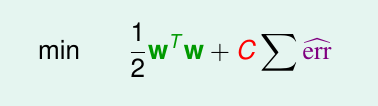

《机器学习技法》系列课程（五）
Soft-Margin SVM as Regularized Model
我们现在回头看看我们学过的几种SVM，最初接触的是Hard-Margin的原始问题，然而由于其涉及到Z空间的复杂度，所以我们提出了Dual形式的SVM。然而Dual并没有完全摆脱Z空间复杂度对SVM计算所带来的影响，由此我们学习了Kernel SVM，将特征转换和向量内积合为一个步骤。然而，如果严格要求没有错误（Hard Margin），可能得到的效果并不好，我们发现如果允许有几个错误点存在，我们的分类任务可能能够做得更好，由此我们提出了Soft-Margin的原始问题，出于和Hard-Margin相同的原因，我们同样对其使用了对偶和核函数的方法，从而得到了不同的SVM。而在实际任务中Soft-Margin的表现往往更好！
我们再看一看我们的Soft-Margin SVM。我们在推到它的时候，其中一个重要的步骤是如何记录错误点的错误程度，我们引入一个新的变量ξn来记录错误的程度。如果我们的点是正确的，那么ξn=0。这是由于我们的限制条件所决定的：
也就是说，它所求的是任何数据点距离SVM的分类面的距离是多少，如果分对了，ξn的结果必然为0，分错了，则可以衡量距离远近，其结果必然是一个正数，所以，我们可以将其转换为如下形式：
可以发现，现在我们连变量ξn都消去了，使用一个max操作来表示我们的soft margin svm问题。上面的表达式我们可以简化表示为下面的形式：

看到这个形式，我们很熟悉，它就是L2正则化:
这两个问题最终都有相同的表示，但是我们却没有使用相同的方法，而是利用QP来解决这个svm问题。为什么不直接使用正则化的解决办法来解决这个问题，原因如下：
- 如果这样做，我们推导得到的对偶和核函数等方法就不能使用了。
- 表达中含有max项目，这是不可导的，所以难以解决。
那么我们可以看一看正则化和svm之间的比较：
可以看到，无论是Harg-Margin还是Soft-Margin的SVM，它们和正则化问题在形式上是等同的。我们使用正则化，从而使用更短的w来降低overfit，而svm通过使用胖的分类界面来简化假设空间，让能够使用的分类面更少，从而降低overfit。而对于soft-margin问题，其参数C越大等价于正则化参数λ越小。
以上，我们建立了SVM和正则化之间的关系，我们可以将SVM看做是一种正则化模型。
SVM versus Logistic Regression
刚刚我们将soft-margin svm变形为如下形式：
我们令上面表达式中max项为ERRsvm，则我们比较这个ERRsvm和我们之前在二元分类中常用的01ERR。现在我们首先将max项中wTzn + b用s表示，yn用y表示：
我们可以绘制出两种错误的曲线图：
其中折线部分容易理解，我们的01ERR是一个bool表达式，如果ys < 0表明预测和实际是相反的，所以err=1，否则err=0。而对于紫色的折线，则是svm的ERRsvm，我们可以发现它是01ERR的一个上界，我们通常将它称为hinge error measure。我们可以使用ERRsvm替代01ERR来解决二分类问题，并且，由于它是一个凸函数，也很容易最佳化！
现在我们来看一看SVM和Logistic Regression的关系。我们在学习LR时，曾经绘制了它的ERRce和01ERR的对比图，在下图的曲线中，表现为橘黄色曲线（我们通过平移将其和01ERR的转折点对齐）。我们能发现，ERRsvm在大部分基本和ERRsce相似。尤其当ys趋近于负无穷和趋近于正无穷时。
如上所述，我们可以说SVM近似于带有L2正则化的Logistic Regression。
最后，我们对比我们学过的一些用于分类的线性模型：
- PLA。我们使用最小化01ERR来优化模型，它关注于错误点，如果数据是线性可分的，那算法就是可行的，否则我们就需要使用Pocket算法。
- Soft-Margin SVM。我们使用QP（二次规划）来最小化ERRsvm，这是比较容易的并且操作起来有理论保证，我们可以利用现有的二次规划工具。然而如果ys太小（专指小于0），此时，ERRsvm和01ERR相差太远，此时如果使用ERRsvm作为01ERR的上界，那损失可能会很大！
- Regularized logistic regression。可以利用梯度下降或者随机梯度下降来优化该问题，这个方法很容易，并且由于使用了正则化，不容易出现过拟合。然而，它和svm有着相同的缺点，都是在ys太小时不能代表01ERR。
解决一个带有正则化的LR问题，近似于解决SVM。
SVM for Soft Binary Classification
下面，我们尝试将SVM应用到二元分类任务（Binary Classification）。
直观上，我们有两种idea：
- 直接使用SVM获得b和w，然后直接带入到LR中，得到g(x) = θ(wTx + b)。这样做很直接，一般结果也还可以，但是却没有使用到LR中比较好的特性和方法。
- 使用SVM获得b和w，令其作为LR（with Regularization）的初始值，然后使用LR的方法来完成任务。然而这样做比直接使用LR没能好哪去，并且还增加了复杂度。
因此，我们的方案调整如下：
我们添加了缩放系数A和平移系数B，其中Wsvm和Bsvm是使用SVM计算得到的，而A和B是使用LR优化求解的。这样能够同时利用LR和SVM的优点！如果我们的Wsvm求解得当，那么A应该大于0，如果Bwvm很好，那么B应该接近0。
从而，我们的新的逻辑回归问题变为了如下形式：
我们将其称为two-level learning：使用LR在SVM特征转换后的数据上学习！对于解决这样的问题一般分为3个步骤：
- 利用SVM获得Bsvm和Wsvm，然后将原始数据通过特征转换转换到Z空间。
- 在Z空间的数据上运行LR，获得A和B两个参数的数值。
- 返回最终的g(x)。
Kernel Logistic Regression
那如果我们想直接在Z空间完成LR该怎么做呢？我们可以引入核函数（Kernel Function）使用QP来优化求解。然而需要注意的是，LR不是一个QP问题，这是否意味着Kernel function我们无法引入了呢。
在回答这个问题之前，我们先回顾一下Kernel Trick为什么能够成立。其中最关键的是我们能让W表示为Zn的线性组合：
我们可以看我们学过的SVM，PLA，LR（by SGD）,他们的W都可以表示为Z的线性组合，也因此，我们可能能够使用这些方法，通过核函数来解决Z空间的分类问题。
那我们看一看我们使用L2正则化（L2-regularized）的线性模型能否使用kernel function，为了证明这个问题，我们利用反证法，首先我们假设是可以的：
为了证明这个问题，我们最重要的思想是将所有的W分解为平行于Zn的部分和垂直于Zn的部分来计算，其具体步骤如下：
对于上面假设中的表达，后面的项中WT可以分解为垂直Zn和平行Zn的两部分，此时垂直部分乘以Zn结果为0，所以后面的部分等价于平行部分于Zn的内积,也就等于原来的部分。而前面的W平方项目，我们同样拆分并且展开平方项，得到的结果却大于平行项的乘积，能推断出当前的w不是最优解，但是这与假设矛盾，因此得证:
这也就说明了任意一个L2正则化的线性模型都能使用kernel function！
现在我们将Kernel function应用到LR模型上。我们直接利用zn的线性替代w:
现在我们所有的w项都被β所替代，我们称其为KLR（kernel Logistic Regression）。我们可以将其理解为β的线性模型，也可以理解为w的线性模型：
需要注意的是SVM和KLR也有不同之处，前者求解后参数α通常有很多0，而后者的β通常都不是0（前者有限SV起到作用，而后者所有点都起到作用）。
文章内容和图片均来自“国立台湾大学林轩田老师”的《机器学习技法》课程！
— END —